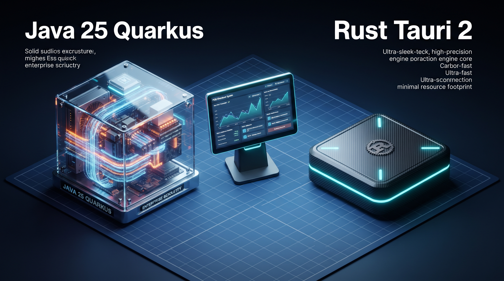

Java 25 (Quarkus) vs. Rust (Tauri 2) no Balcão: Onde Fica o Gargalo Quando Ambos Usam SQLite?
No balcão do comerciante, sob a luz do mutirão,
Dois caixas fortes disputam a melhor execução.
De um lado o Java soberano, cascudo e tradicional,
Do outro o Rust ligeirinho, na memória sem igual.
Mas gravando no SQLite o disco dita a razão:
Sem alarde nem modismo, vence a boa engenharia em ação!
O cordel contrapõe a maturidade do ecossistema Java ao frescor ultraleve do Rust. Na prática do balcão, medir o gargalo real de CPU, memória e I/O de disco é o que separa a ilusão do hype da decisão técnica consciente.
- Estratégia de Coexistência: Java (maduro, multiplataforma Windows/Linux/macOS e pronto para a transição tributária) e Rust (piloto rápido e ultraleve para Windows) atendem a perfis operacionais distintos sem migração forçada.
- Pegada de Memória (RAM): Rust + Tauri 2 opera entre 30 MB e 80 MB de RAM. O Java 25 com Quarkus opera entre 150 MB e 300+ MB de RAM em repouso. Em computadores de balcão modestos (Celeron/Atom com 2 GB ou 4 GB de RAM), essa diferença determina a fluidez do sistema operacional.
- O Equalizador SQLite: Como ambas as aplicações usam SQLite local em modo WAL com chamadas nativas em C, as operações de leitura e escrita síncrona em disco consomem tempo rigorosamente idêntico em ambas as linguagens.
- Determinismo e Cold Start: O Rust entrega ausência total de pausas de Garbage Collection e inicialização instantânea (< 100 ms), enquanto o Java 25 oferece pausas imperceptíveis com Generational ZGC, porém com tempo de bootstrap ligeiramente maior.
1. Por Que Manter Duas Linhas de PDV Desktop?
No mercado de automação comercial, a busca desavisada pela "linguagem perfeita" frequentemente empurra empresas de software a refatorações traumáticas, abandonando bases consolidadas para reescrever tudo do zero. Na Cara Core Informática, recusamos o dogma do refatoramento cego. Adotamos uma estratégia pragmática de coexistência de duas linhas desktop offline-first:
- Linha Java (Madura / v3.2.3-free / v4.0.0-rc2): Focada em estabilidade corporativa, suporte multiplataforma (Windows, Linux e macOS), regras fiscais maduras e suporte à Reforma Tributária. Opera com Quarkus, SSR via Qute e SQLite WAL local.
- Linha Rust + Tauri 2 (Piloto / v0.1.2): Voltada para implantação ágil no Windows (via executável leve MSI/NSIS), com baixíssimo consumo de memória, React no frontend e teto de validação de até 100 vendas no banco do piloto.
Ambos os produtos compartilham a nossa **Arquitetura Bunker** de soberania local (operação 100% offline-first que nunca trava o caixa se a internet cair). Ao invés de forçar o lojista a migrar de stack, deixamos que a maturidade da loja e a capacidade da máquina de balcão determinem a melhor solução.
2. Footprint de Memória (RAM) em Hardware Limitado
O balcão do pequeno e médio varejo brasileiro é um ambiente hostil. É comum encontrar computadores integrados antigos, mini PCs com processadores Celeron ou Atom e apenas 2 GB a 4 GB de memória RAM compartilhada com o sistema operacional.
Nesse cenário, o footprint de memória (uso de RAM em repouso e sob carga) torna-se a métrica de sobrevivência mais crítica:
- Rust + Tauri 2: Graças ao gerenciamento de memória em tempo de compilação por ownership e borrowing e ao reuso do motor WebView2 nativo do Windows, o executável consome de 30 MB a 80 MB de RAM. Não há máquina virtual nem servidor de aplicação pesado residente na memória.
- Java 25 (Quarkus): O Java 25 e o Quarkus revolucionaram o tempo de boot e a pegada da JVM. No entanto, o piso mínimo inevitável da Java Virtual Machine (heap, metaspace, estruturas internas de JIT) estabiliza o consumo em 150 MB a 300+ MB de RAM.
Em um computador topo de linha essa diferença é insignificante. Contudo, em um caixa modesto rodando simultaneamente o navegador, o gerenciador de impressão e o PDV, a economia de 200 MB de RAM promovida pelo Rust é a fronteira entre uma operação fluida e travamentos por swapping no disco.
3. Latência e Determinismo: Garbage Collector vs. Zero-Cost Abstractions
Durante uma rajada de leitura de código de barras no balcão (quando dezenas de itens são biados em sequência por um operador ágil), a consistência do tempo de resposta por item determina a percepção de agilidade do caixa.
A comparação de runtime evidencia duas abordagens filosóficas distintas:
Java 25 com Generational ZGC: As versões modernas do Java trouxeram amadurecimento impressionante para os coletores de lixo (GC). O ZGC em modo geracional no Java 25 reduz as pausas de coleta para a escala dos sub-milissegundos. No entanto, estatisticamente, ainda ocorrem variações mínimas de latência quando o GC precisa desalocar objetos temporários em rajada.
Rust e Abstrações de Custo Zero: O Rust não possui Garbage Collector. A desalocação de memória é injetada estaticamente pelo compilador no exato ponto onde a variável sai de escopo. O resultado é um comportamento determinístico de ordem $O(1)$ sem nenhuma pausa de execução, garantindo que o milissegundo de resposta do item #1 seja exatamente idêntico ao do item #100.
4. O Equalizador de I/O: O Comportamento do SQLite Local
Muitos entusiastas assumem antecipadamente que "um caixa em Rust executará queries no banco 10 vezes mais rápido que o Java". Em testes de estresse real com o nosso motor de persistência bunker, essa premissa prova-se falsa.
Análise do Gargalo de I/O de Disco (SQLite WAL)
Como ambas as linhas gravam em instâncias locais do SQLite compilado em C nativo, o gargalo primário das transações reside nas operações físicas de gravação no sistema de arquivos e no envio do fsync.
Driver Rust (rusqlite / sqlx)
Chamada C-FFI direta entre o binário compilado em Rust e a DLL/SO nativa do SQLite. Tempo de gravação de venda no WAL: ~1.2 ms a 3.0 ms (dependendo do SSD/HD local).
Driver Java 25 (Panama FFI / JDBC)
Uso da Foreign Function & Memory API (Project Panama) do Java 25 eliminando o overhead histórico do JNI antigo. Tempo de gravação de venda no WAL: ~1.3 ms a 3.2 ms.
Como o banco de dados é o SQLite operando localmente no disco, o limite de performance das vendas finalizadas é determinado pelas travas de transação (locks) e pela velocidade de gravação física no log WAL. Nesse ponto, Rust e Java 25 empatam virtualmente na casa dos milissegundos.
5. Arquitetura de Frontend: IPC Nativo vs. SSR com Loopback HTTP
Outro ponto técnico relevante é a forma como a interface de usuário (UI) se comunica com a camada de negócio que processa a venda:
- Rust + Tauri 2 (React): A UI em React roda na WebView2 e comunica-se com a camada nativa Rust através de IPC (Inter-Process Communication) assíncrono via bindings binários. A latência de mensagem fica abaixo de 1 milissegundo.
- Quarkus + Qute (SSR local): O backend Java Quarkus escuta na porta local (`localhost:8080`) e serve páginas HTML dinâmicas compiladas via Qute Template Engine. O navegador renderiza o HTML vindo por loopback HTTP local com tempo de resposta entre 1 ms e 5 ms após o aquecimento inicial do JIT.
6. Cold Start e Time-to-First-Frame
A métrica de Time-to-First-Frame avalia quantos milissegundos se passam entre o momento em que o operador dá dois cliques no ícone da área de trabalho e o instante em que a tela de login/caixa aparece pronta para uso.
Neste quesito, o piloto em Rust atinge a marca da inicialização instantânea (< 100 ms), pois o binário nativo pré-compilado carrega direto na memória e aciona a WebView2. O Java 25 com Quarkus, mesmo com a incrível otimização de inicialização do ecossistema, consome de 800 ms a 1.5s para subir o contexto da JVM, verificar conexões do SQLite e disponibilizar a porta local.
Quadro Comparativo de Arquitetura
| Métrica / Parâmetro | Java 25 (Quarkus + Qute) | Rust (Tauri 2 + React) |
|---|---|---|
| Consumo de RAM em Repouso | 150 MB — 300 MB | 30 MB — 80 MB (Vencedor) |
| Garbage Collection (GC) | Pausas sub-ms (Generational ZGC) | Zero GC / Estático (Vencedor) |
| Gravação SQLite (WAL) | ~1.3 ms (Panama FFI) | ~1.2 ms (rusqlite / C-FFI) (Empate) |
| Cold Start (Boot Time) | 800 ms — 1.5s | < 100 ms (Vencedor) |
| Multiplataforma Nativa | Windows, Linux e macOS (Vencedor) | Foco Piloto Windows (NSIS/MSI) |
| Maturidade Fiscal & Tributária | Canal maduro consolidado (Vencedor) | Canal piloto (100 vendas max) |
7. Conclusão: Engenharia Consciente de Trade-offs
A escolha entre Java 25 e Rust no PDV Desktop não é uma guerra de torcidas tecnológicas, mas uma lição de engenharia de software baseada em requisitos operacionais reais:
- Se a loja exige estabilidade comprovada em produção, suporte a Linux/macOS e ecossistema fiscal maduro, o PDV Java é a escolha consolidada e imbatível.
- Se o comércio opera no Windows em hardware extremamente limitado e necessita de um executável ultraleve com inicialização instantânea e footprint de memória mínimo, o PDV Rust é o piloto ideal.
Na Cara Core Informática, a verdadeira performance não é um número isolado de benchmark, mas a capacidade de manter o caixa funcionando com elegância, soberania e sem travar o negócio do cliente.
Dicionário de Termos Técnicos
Para facilitar a leitura e o entendimento do artigo, organizamos os conceitos técnicos e jargões utilizados em ordem alfabética:
- Arquitetura Bunker: Diretriz de engenharia da Cara Core focada em sistemas offline-first de alta resiliência que continuam operando 100% locais sem depender de conexões com a nuvem.
- Cold Start (Time-to-First-Frame): Tempo total decorrido entre a execução do binário pelo usuário e o surgimento da primeira janela da interface de usuário pronta para interagir.
- FFI (Foreign Function Interface) / Project Panama: Mecanismo que permite a linguagens como Java ou Rust invocar diretamente funções compiladas em bibliotecas C nativas sem overhead desnecessário.
- Footprint de Memória: Quantidade real de memória RAM ocupada por um processo em execução no sistema operacional durante os estados de repouso (idle) e carga máxima.
- Garbage Collection (GC) / Generational ZGC: Processo automático de gerenciamento de memória que identifica e desaloca objetos em desuso. O Generational ZGC do Java 25 reduz as pausas para escala sub-milissegundo.
- IPC (Inter-Process Communication): Mecanismo de alta velocidade para troca de dados entre o processo nativo backend (Rust) e a janela de renderização frontend (WebView2 do Tauri 2).
- Mode WAL (Write-Ahead Logging): Modo de operação do SQLite que grava alterações em um log sequencial separado antes de sincronizar o banco principal, aumentando dramaticamente a velocidade de escrita e concorrência.
- Ownership & Borrowing: Sistema de gerenciamento de memória exclusivo da linguagem Rust que garante segurança de memória em tempo de compilação sem necessitar de um Garbage Collector.
- Qute (Quarkus Template Engine): Motor de templates server-side ultraotimizado do framework Quarkus para renderização rápida de HTML no lado do servidor.
- SQLite: Banco de dados relacional embarcado, leve, servidor-less e armazenado em arquivo único local, utilizado como padrão de persistência bunker em ambos os PDVs.
- Tauri 2 & WebView2: Framework para construção de aplicações desktop leves que utiliza binários compilados em Rust e a engine de renderização web nativa do sistema operacional (WebView2 no Windows).
Hashtags
Contato
- E-mail: suporte@caracore.com.br
- Site Institucional: www.caracore.com.br
- PDV Java (Canal Maduro): Página e Releases do PDV Java
- PDV Rust (Canal Piloto): Página do Piloto PDV Rust
- LinkedIn: Cara Core Informática
Conheça a arquitetura de PDV Desktop offline-first da Cara Core Informática e escolha a linha ideal para o seu perfil operacional.
Conhecer o PDV Java Falar com os Engenheiros
Artigo publicado em 30 de maio de 2027
© 2027 Cara Core Informática. Todos os direitos reservados.